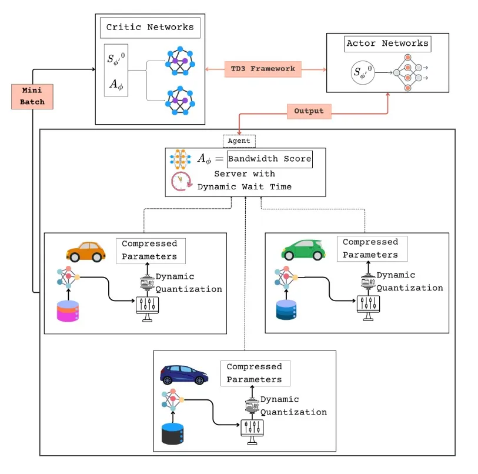
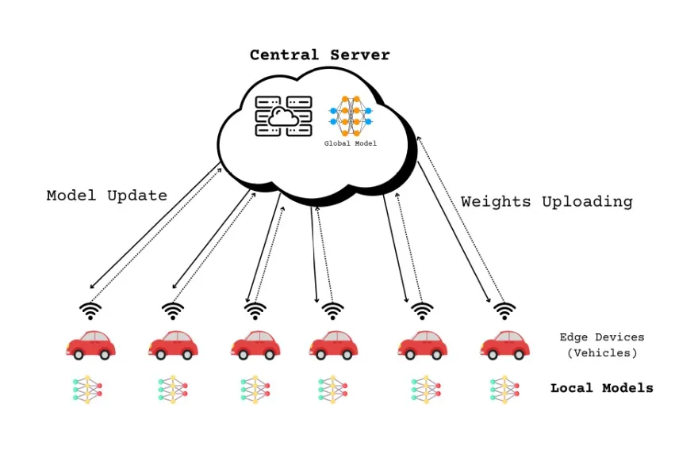
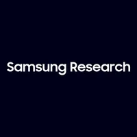

Research Interests
- Federated Learning
- Reinforcement Learning
- Edge Intelligence
- Mobile Computing
- On Device AI
- IoT
Publications

Data-Diversity-Aware Quantization for Semi-Synchronous Federated Deep Reinforcement Learning in Vehicular Edge Computing
Under Review: 1st Major Revision Submitted at Future Generation Computer Systems · 2026
Introduces DQS-FeDRL, a framework that uses dynamic quantization to compress client updates based on how unique their data is. It also features a smart scheduler that can distinguish between devices that are temporarily delayed and those that have dropped offline completely. This prevents the training process from stalling, leading to up to 2.9× faster convergence and up to 75% reduction in network traffic in vehicular networks.
Ittehad Saleh Chowdhury, Reyadath Ullah, Md. Abdur Razzaque, Abdulhameed Alelaiwi, Md. Rafiul Hassan, Mohammad Mehedi Hassan.

Federated Deep Reinforcement Learning for Optimal Resource Allocation in Vehicular Edge Computing
SAI Computing Conference 2025 · London
Proposes a Twin Delayed Deep Deterministic Policy Gradient (TD3) based scheduler to optimize device selection and bandwidth allocation. It prioritizes clients with diverse datasets rather than just fast network connections to improve model generalization, demonstrating up to 5% improvement in model accuracy alongside up to 38% reduction in edge device energy consumption and up to 32% lower latency.
Reyadath Ullah, Ittehad Chowdhury, Md. Abdur Razzaque, Palash Roy, Mohammad Mehedi Hassan.
Other Publications
- Reducing Complexity in Exporting RMG Products Using Artificial Intelligence in Bangladesh. Reyadath Ullah, Ahmed Shakibul Islam, Toma Ray, Nusrat Najnen Eva. Supply Chain Insider, Vol. 12, Issue 1, pp. 61–85, 2024.
Research Experience
William & Mary - IMLS CiteCast Project
Remote Research Collaborator · Sep 2026 – Present
- Collaborating on an IMLS-funded project to identify and preserve web resources referenced in archived US television news, alongside Old Dominion University and the Internet Archive.
- Developing multi-modal machine learning and deep learning models for web citation detection under the supervision of Dr. Alexander C. Nwala and Dr. Yanfu Zhang.
Green Networking Research Group, University of Dhaka
Researcher · Sep 2023 – Present
- Supervised by Dr. Md. Abdur Razzaque.
- Exploring federated learning and resource allocation in vehicular edge computing.
- Focusing on energy-aware systems and reliable networking at scale.
Industry Experience

Samsung Research :: Engineer-I
Aug 2025 – Present
- Migrated the Samsung Tizen Emulator backend from legacy QEMU 2.3.4 to QEMU 9.2.4 and redesigned the UI architecture with SDL2, replacing Qt to improve cross-platform performance.
- Developed Tizen Agent Skills, an open-source Node.js/TypeScript toolkit enabling AI coding assistants (Claude, Gemini, Cline) to automate Tizen SDK workflows via natural language, including app deployment, GDB/CDP remote debugging, and Playwright testing.
- Developed and published the Tizen VS Code Extension on the VS Code Marketplace.
- Researching and drafting patents for distributed, federated-learning-based recommendation systems to drive AI feature recommendations across Samsung devices.
Turing :: Python Developer (Team Lead)
Dec 2023 – Dec 2024
Turing partners with frontier AI labs to improve LLM reasoning and coding through high-quality human-generated training data.
- Led a team of 6–8 engineers refining data pipelines for training AI models.
- Created and reviewed Python coding data used to post-train LLMs via supervised fine-tuning (SFT) and reinforcement learning from human feedback (RLHF).
- Set quality guidelines and reviewed team submissions to keep training data accurate and consistent.
- Automated workflows and deployment using Bash and Python scripts.
CodexPro :: Python Instructor
Jan 2023 – Aug 2023
- Taught basic to intermediate Python (English batches).
- Helped design course materials for Python and Scratch.
Embedded Programming
Device Drivers for STM32F4xx Microcontrollers
- Developed bare-metal device drivers for STM32F4xx microcontrollers (ARM Cortex-M4) from scratch using C/C++ and register-level programming.
- I2C: Supports master/slave modes, address handling, and event/error interrupts.
- SPI: Features flexible baud rates, data format settings, and interrupt-based communication for slave mode.
- UART: Provides robust configuration and communication functions for UART2, UART4, and UART5.
DUOS (RTOS) for ARM Cortex-M4
C/C++ · ARM Assembly · CMake · Register-level programming
- Contributed to the Dhaka University Operating System (DUOS), an educational real-time operating system targeting ARMv7-M architectures (specifically STM32F4xx).
- Developed core RTOS capabilities including task management, context switching, and hardware interaction.